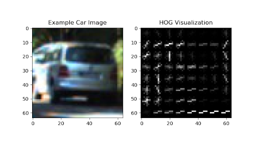
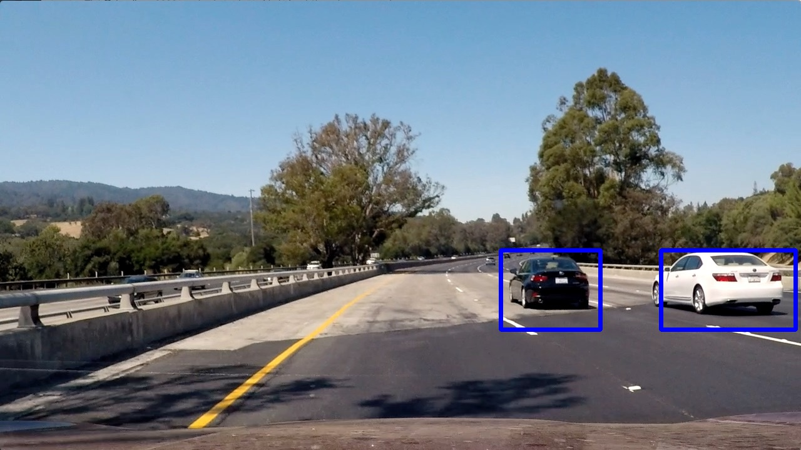
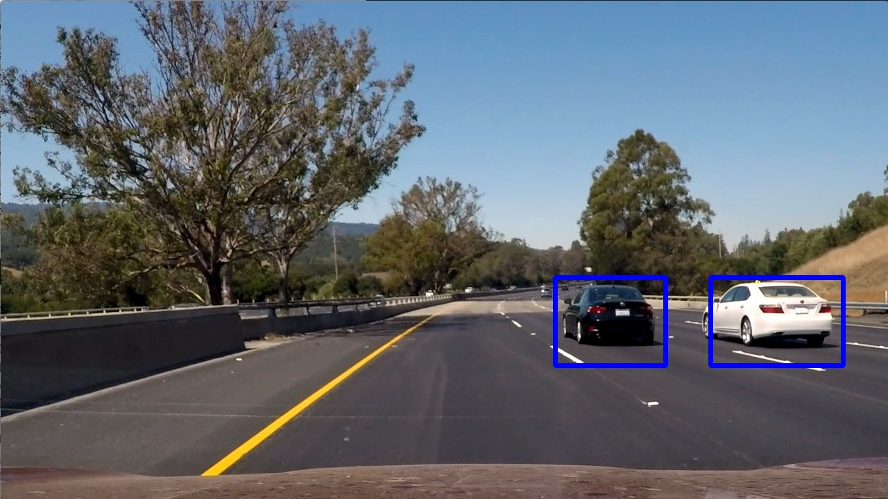

Vehicle Detection Project
Programming Language:
- Python
The goals of this project are the following:
- Perform a Histogram of Oriented Gradients (HOG) feature extraction on a labeled training set of images and train a classifier Linear SVM classifier
- Optionally, you can also apply a color transform and append binned color features, as well as histograms of color, to your HOG feature vector.
- Note: for those first two steps don’t forget to normalize your features and randomize a selection for training and testing.
- Implement a sliding-window technique and use your trained classifier to search for vehicles in images.
- Run your pipeline on a video stream (start with the test_video.mp4 and later implement on full project_video.mp4) and create a heat map of recurring detections frame by frame to reject outliers and follow detected vehicles.
- Estimate a bounding box for vehicles detected.
1. Feature Extraction
I extract the binned color, histogram of color and HOG as my feature and trained a SVC classifier using the concatenated feature. The following shows the parameters that I used:
| Feature | Setting |
| Color Space | YUV |
| orient | 9 |
| pix_per_cell | 8 |
| cell_per_block | 2 |
| hog_channel | ‘ALL’ |
| spatial_size | (16,16) |
| hist_bins | 16 |
The SVC classifier is used to predict a give image is a are or not. The following image shows a positive and a negative sample.
The computed histogram of color is shown as follow:
The below figure shows the visualized HOG featgure. 
I applied sliding window on the bottom half part of the image.
For each window, the chosen features are extracted and passed to the pre-trained SVC classifier to predict if the current location is a car or not. Then, we generate a heat map based on the detected results and filter low value out. The following shows the visualized detected results.
| Detected BBoxes | Heat Map | Final Detection |
 |
||
 |
 |
|
 |
 |
|
 |
 | |
 |
 |
|
 |
 |
2. Make it smooth.
Till now, the pipline works on single frame. However, there is no relationship between two continuous frames and the detected results are independent. Thus, I came up with an idea that sonsidering several continuous frames to make the detected results more smoothly. I record 3 latest heatmap and then sum them together before doing threshold. Using this way, the detected results become much more stable. Please refer the demo video.
3. Potential Issue.
The parameters of the current pipline are manually chosen, the trained model and chosen parameters may not work for all videos.
Potential solution: using deep learning object detection models, e.g. SSD.